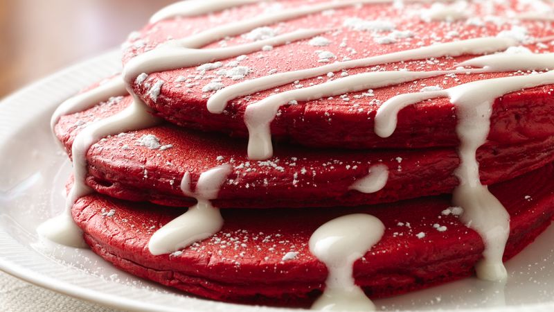

Redvelvet Pancakes

Ingredients
Cream Cheese Topping
- 4 oz cream cheese, softened
- 1/4 cup butter, softened
- 3 tablespoons milk
- 2 cups powdered sugar
Pancakes
- 2 cups Original Bisquick mix
- 1 tablespoon granulated sugar
- 1 tablespoon unsweetened baking cacoa
- 1 cup milk
- 1 to 1 1/2 teaspoons red paste food color
- 2 eggs
- (optional)powdered sugar
Step by Step Directions
- In medium bowl, beat cream cheese, butter and 3 tablespoons milk with electric mixer on low speed until smooth. Gradually beat in 2 cups powdered sugar, 1 cup at a time, on low speed until topping is smooth. Cover; set aside.
- In large bowl, stir all pancake ingredients except powdered sugar with wire whisk until well blended. Heat griddle or skillet over medium-high heat (375°F). (To test griddle, sprinkle with a few drops of water. If bubbles jump around, heat is just right.) Brush with vegetable oil if necessary or spray with cooking spray before heating.
-
For each pancake, pour slightly less than 1/4 cup batter onto hot griddle. Cook 2 to 3 minutes or until bubbles form on top and edges are dry. Turn; cook other side until golden brown.
- Spoon cream cheese topping into resealable food-storage plastic bag; seal bag. Cut off tiny corner of bag; squeeze bag to drizzle topping over pancakes. Sprinkle with powdered sugar.
Return To Top
Return To Main Page